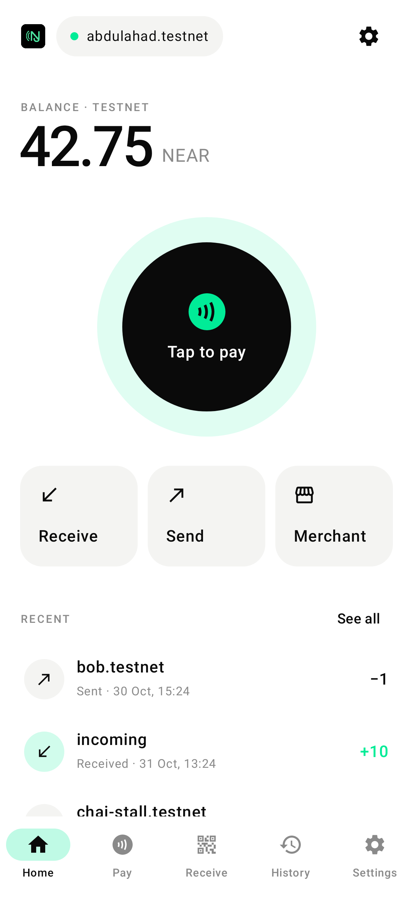
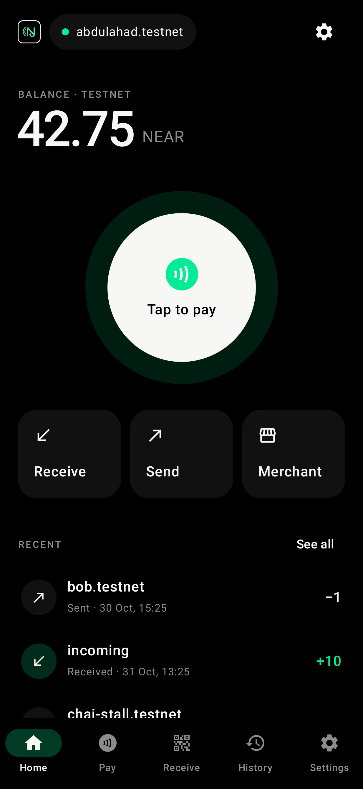
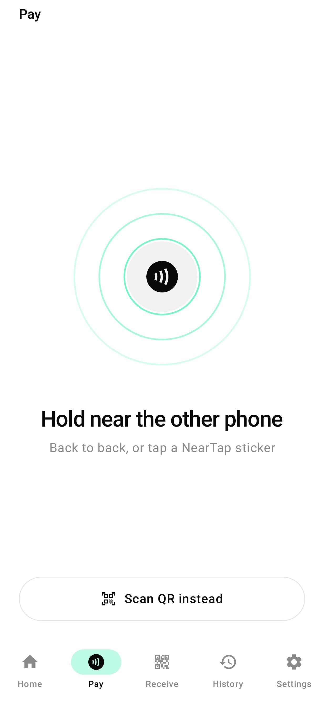
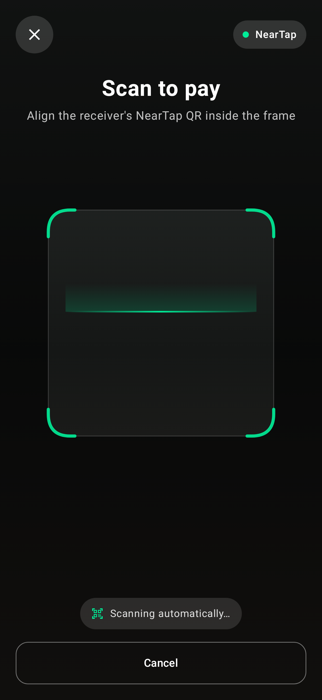
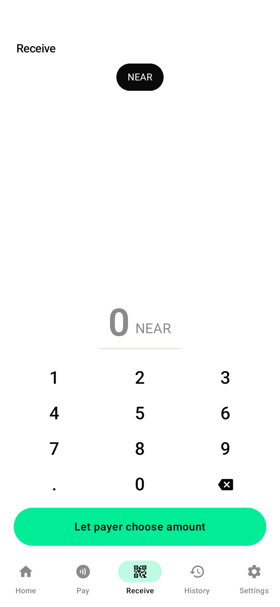
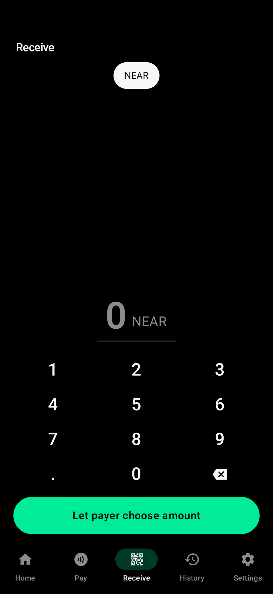
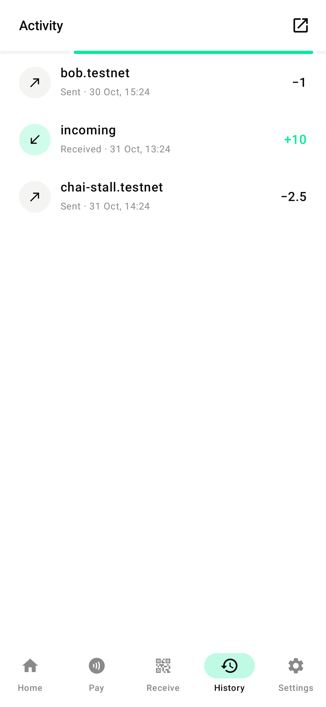
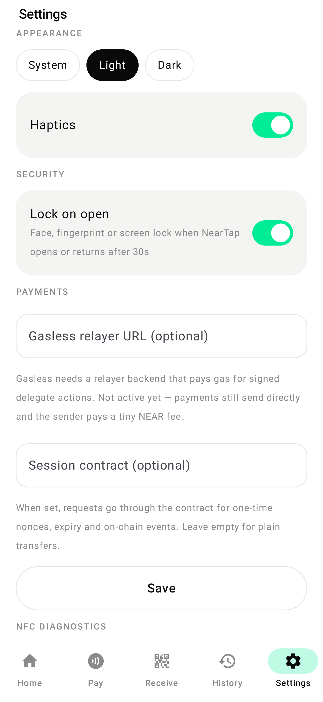
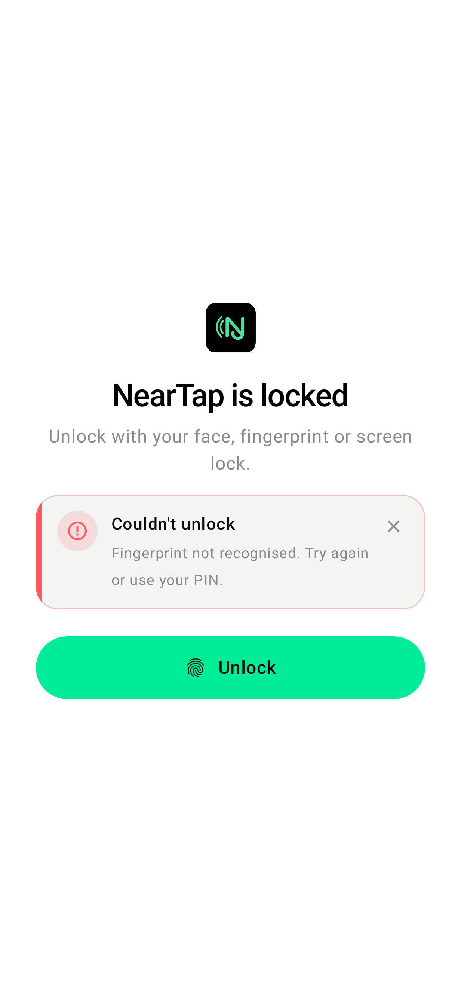

NearTap turns any NFC Android phone into a payment terminal. Hold two phones together, confirm with your fingerprint or passkey, and NEAR settles in about a second. Non-custodial, human-readable names, no card reader.
Animated simulation with sample data. On real devices it uses Android Host Card Emulation + reader mode.
How it works
Three moves. One second.
Request
Receiver types an amount. Their phone starts serving a one-time request: account, amount, token, nonce and a 5-minute expiry.
Tap
Sender holds their phone close. Reader mode selects NearTap's AID, reads the payload and shows a clear confirm sheet. Confirm with biometrics or passkey.
The transaction is signed on-device and sent to NEAR. The receiver watches the chain and shows a receipt with a NearBlocks link.
Transfer 0.5 NEAR bob.testnet → alice.testnet ✓ executed
THE DIFFERENTIATORBring your own account
Connect any account. Guard it with a passkey.
Already have a NEAR testnet account? Import it by secret key or seed phrase, or link a passkey so every payment needs your synced passkey too. No seed phrase living on the phone.
Create a new *.testnet account in seconds
Import with ed25519 secret key or 12/24-word seed phrase (m/44'/397'/0')
Link a passkey to an existing account via Android Credential Manager
Leave the account id blank — NearTap looks it up from your key
1
Prove ownership oncePaste your key or seed. NearTap checks it controls the account on-chain.
2
New device key, added on-chainNearTap generates a fresh key and submits an AddKey transaction signed by your original.
3
Passkey registeredA passkey is created for the account with user verification required.
4
Original key is not storedOnly the device key stays, encrypted by the Keystore. Each payment asks for passkey + biometrics.
Everything in the app
A full wallet, not a demo screen.
Phone-to-phone NFC tap pay
Native Kotlin HostApduService with a custom AID serves the request; the payer's phone reads it with IsoDep reader mode. Payload is under 250 bytes, one short APDU. Handles NFC off and unsupported devices with settings shortcut and QR fallback.
HCEIsoDepAID F048414C4F504159NFC off / unsupported handling
NEAR testnet, ~1s finality
Plain transfers over JSON-RPC with automatic fallback endpoint. Fast enough that the receipt lands while you're still holding the phones.
Create, import, link
New testnet account, secret-key import, seed-phrase import, or passkey linking. Reveal or back up your secret key behind biometrics.
Keystore-locked keys
Non-custodial. Each key is AES-GCM encrypted by an Android Keystore key that needs fingerprint, face or PIN. Decrypted only in memory to sign.
Multi-account
Hold several accounts on one phone, switch in a tap and remove any of them. Removing deletes the key from the device.
Send by account name
Type bob.testnet, enter an amount on the built-in keypad. NearTap checks the account exists before you pay.
Receive: NFC + QR
Every request is also a QR code. No NFC on one side? Scan instead. Receiver detects payment by watching the chain.
Activity with NearBlocks
Recent transactions from NearBlocks plus on-device history, each row opens the testnet explorer.
Merchant mode with NFC stickers
Write a reusable pay-me request (fixed or open amount) to an NTAG213/215/216 sticker. A customer taps the sticker, not your phone, and NearTap opens straight to the confirm sheet.
NDEF writeAndroid Application RecordNo second phone needed
Optional session contract
Rust near-sdk contract: nonce replay protection, expiry, events, native NEAR and NEP-141. App works without it.
NEAR + NEP-141 tokens
Request native NEAR or fungible tokens such as test USDC via ft_transfer / ft_transfer_call.
Haptics & motion
Buzz on tap, success and failure. Pulsing NFC rings, a self-drawing check, soft transitions, switchable off.
White & black themes
System, White or Black, with NEAR green accents. True black for OLED.
Inside the app
Quiet by design.
Real screens captured from the NearTap app on testnet.

HomeBalance and the tap orb

Home · darkTrue black for OLED

PayHold near the other phone

Scan to payQR fallback, NearTap-styled

ReceiveKeypad, NEAR or test USDC

Receive · darkSame flow, black theme

ActivityOn-device + NearBlocks

SettingsTheme, lock, relayer, contract

Lock on openFace, fingerprint or PIN
Security
Your keys. Your phone.
NearTap has no backend and no custody. Everything signs locally and talks straight to NEAR RPC.
secret seed ──AES-256-GCM──► Android Keystore
│ (hardware-backed where available,
│ unlock: biometric / device PIN, 15 s)
▼
in-memory only ──ed25519 sign──► NEAR RPC (testnet)
Keystore-wrapped keysThe ed25519 seed is stored encrypted; the AES key lives in the Android Keystore and needs biometric or PIN auth.
Auth before every paymentFingerprint, face or device PIN, plus your passkey if the account is passkey-protected.
One-time, expiring requestsEach request has a random 16-hex nonce and expires after 5 minutes. With the session contract, a nonce can be paid exactly once.
Non-custodial by constructionNo account, no server, no analytics. Remove an account and its key is deleted from the device.
Tested cryptoBorsh transaction bytes, signatures, key formats and seed-phrase derivation are unit-tested against near-api-js vectors.
Optional · on-chain sessions
Replay-proof by contract.
Point NearTap at a small Rust contract and each tap becomes a one-time payment session.
Nonce replay protection — each (receiver, nonce) pays once
Expiry checked on-chain against block time
NEP-297 style payment events for indexers
Native NEAR via pay, NEP-141 via ft_on_transfer
get_payment view gives the receiver an exact confirmation
Testnet deploy script included; plain transfers still work without it
Needs NFC with host card emulation, a secure screen lock, and arm64 (virtually every phone since 2017).
✕iPhone
iOS doesn't let third-party apps act as a card toward another phone. Apple reserves card emulation for Apple Pay and approved partners, so a phone-to-phone tap like this can't run on iOS.
✓QR fallback
No NFC, or NFC off? The same request shows as a QR code that NearTap can scan. Emulators have no NFC, so test on real phones.
Honest note: hackathon build, testnet only.NearTap runs on NEAR testnet and holds no real value. It is a debug-signed APK that has not been security-audited, and Play Store distribution isn't set up. Verify the SHA-256 above after downloading.
FAQ
Questions.
Is this real money?
No. NearTap only talks to NEAR testnet. Testnet NEAR has no value and is free from a faucet.
Do I need two phones?
To try the NFC tap, yes: two Android 10+ phones with NFC, both running NearTap. With one phone you can still create accounts, send by name, show a QR and write a merchant sticker.
How do passkeys work here?
NEAR can't verify passkey signatures on-chain, so the passkey acts as a gate rather than the signing key. Linking proves ownership of your existing account once, adds a fresh device key on-chain, registers a passkey, and stores only that device key (encrypted in the Keystore). Each payment then needs the passkey and your biometrics. Restoring from a passkey alone on a new phone isn't supported — keep your backup. Passkeys need this site deployed on your own domain (it serves the assetlinks.json that proves the app owns the passkey domain); until then NearTap keeps the passkey switch off and everything else works. You can set your domain in Settings → Advanced.
Can I import my existing account?
Yes — with an ed25519: secret key or a 12/24-word seed phrase (derivation path m/44'/397'/0', same as common NEAR wallets). The account id is optional; NearTap can look it up from the key.
Where are my keys stored?
On your phone only. The seed is AES-GCM encrypted with a key held by the Android Keystore that requires biometric or PIN authentication, and is decrypted in memory just long enough to sign.
Can someone replay a payment request?
Requests carry a random nonce and a 5-minute expiry, and the payer confirms each one. With the optional session contract, the same nonce can never be paid twice. Merchant stickers are intentionally reusable.
Does it work with tokens?
Yes: native NEAR, and NEP-141 tokens such as test USDC. Token payments through the session contract need the contract and the receiver to be registered with that token.
Why can't I install it from the Play Store?
It's a hackathon build distributed as an APK. Sideload it by allowing unknown sources for the app you open it with.